Overview
Purpose
The purpose of the "Chainsaw-Manga" web page is to provide information and ratings a bout various manga titles, as well as introduce readers to the world of manga. Through thoughtful analysis and review, the web page aims to help readers discover new titles they may enjoy and provide guidance on which manga series are worth reading.
Audience
The web page can be directed to anyone who is interested in manga and wants to learn more about the medium. This could include fans of other forms of Japanese entertainment, such as anime or video games, as well as those who are simply looking for new and engaging storytelling experiences. The web page can also appeal to people who are interested in art and illustration, as manga is known for its unique visual style. Overall, the "Chainsaw-Manga" web page can be a valuable resource for anyone looking to explore the diverse and fascinating world of manga.
Branding
Website Logo
Style Guide
Color Palette
Palette URL: https://coolors.co/396e94-e7c24f-a43312-381d2a-aabd8c| Primary | Secondary | Accent 1 | Accent 2 |
|---|---|---|---|
| [#396E94] | [#E7C24F] | [#A43312] |
Typography
Heading Font: Roboto Condensed
Paragraph Font: Open Sans
Welcome to Chainsaw-Manga, the ultimate destination for manga fans and newcomers alike! Our website is dedicated to providing you with comprehensive information, analysis, and ratings of various manga titles. We carefully curate our reviews to help you find the best and most exciting manga series, and to deepen your appreciation of the medium's unique storytelling style. Whether you're a seasoned manga reader or just getting started, we're confident that you'll find something of value here at Chainsaw-Manga. So why wait? Dive into our website, explore our reviews, and discover your next favorite manga series today!
At Chainsaw-Manga, we're passionate about all things manga, and we're excited to share that passion with you. Our website is designed to be a comprehensive resource for manga fans of all experience levels, from those who are just starting to explore the medium to those who have been reading manga for years. We believe that manga is a unique and powerful form of storytelling, with the ability to transport readers to new worlds, introduce them to complex characters, and explore a wide range of themes and topics.
Colored paragraph example
Please note that all manga ratings and opinions on Chainsaw-Manga are my own. Manga is subjective, so my ratings may not reflect the opinions of all readers. I encourage you to read each series and form your own opinions. As always, I welcome your feedback and comments.
Navigation
Site Map
Content
Home page
Manga is a Japanese style of comic books that originated in the late 19th century. The word "manga"
means "whimsical pictures" in Japanese, and it quickly became a popular form of entertainment in Japan. The early
manga were often comedic, and they were published in newspapers and magazines. However, the style and subject matter
of manga have evolved over time, and it has become a widely recognized and respected art form around the world.
One of the most significant changes in manga's evolution was the introduction of "shonen manga" in the 1950s. Shonen
manga is manga targeted towards young boys and often includes elements of action, adventure, and heroism. This genre
became incredibly popular and led to the creation of many iconic manga series such as Dragon Ball, Naruto, and One Piece.
Several mangakas have played a significant role in the evolution of manga. One such mangaka is Osamu
Tezuka, who is often referred to as the "Godfather of Manga" and for good reason.
He played a significant role in shaping the manga industry as we know it today. Tezuka's innovative storytelling
techniques and artistic style transformed manga from a niche market to a mainstream phenomenon.
Tezuka's works, such as "Astro Boy" and "Kimba the White Lion," not only captured the hearts of readers in
Japan but also gained popularity worldwide. His approach to character design and storytelling paved the way
for future manga artists and helped to establish the distinct style and tropes that are now synonymous with manga.
Another group of mangakas that played a significant role in the evolution of manga are known as the "Big
Three." This term refers to the three most influential shonen manga series of the 2000s: One Piece, Naruto, and Bleach.
These series had a massive impact on the shonen manga genre and helped shape the direction of manga in the 21st century.
Akira Toriyama created the massively popular Dragon Ball series. His work had a significant impact on the shonen manga genre
and helped shape the modern style of action and adventure manga.
Eiichiro Oda is the mangaka behind One Piece, which has become one of the best-selling manga series of all time. Oda's
unique art style and storytelling techniques have had a significant influence on the shonen manga genre, and he has inspired
many other mangakas. Masashi Kishimoto, the creator of Naruto, introduced many new elements to the shonen manga genre,
including complex character relationships, political intrigue, and philosophical themes. Finally, Tite Kubo's Bleach broke
new ground with its unique blend of action, supernatural elements, and humor. Together, these three series and their creators
have helped shape the evolution of manga into the highly respected and widely popular art form it is today.
Naoki Urasawa is my favorite manga, he is known for his intricate and suspenseful narratives that often explore
complex themes such as justice, identity, and humanity. Urasawa's contributions to the evolution of manga are significant, as
he has helped to push the boundaries of what manga can be and what stories it can tell. He is often praised for his innovative
storytelling techniques, which incorporate elements of suspense, mystery, and psychological drama, and for his ability to create
fully-realized and multi-dimensional characters that resonate with readers.
Images for the Home page


Top Mangas
10. Adolf - Osamu Tezuka
A historical drama that explores the lives of three men named Adolf during the lead up to World War II. The series
features Tezuka's signature artwork and explores themes of nationalism and identity.
09. Tokyo Ghoul - Sui Ishida
A horror series that explores themes of identity and survival, Tokyo Ghoul follows
a young man who becomes a half-ghoul after a violent encounter with a ghoul. The series features visceral artwork
and an intricate plot.
08. Oyasumi Punpun - Inio Asano
A coming-of-age story that follows a young boy named Punpun as he navigates the complexities of life and love. The
series features unique artwork that is both whimsical and dark.
07. Dorohedoro - Q Ayashida
In an alley, Nikaido, a young martial arts expert who runs a restaurant, finds Caiman, a man with the head of a
reptile and amnesia. To finish, both decide to finish off the sorcerers until they kill the correct one that makes
the enchantment disappear.
06. Chainsaw Man - Tatsuki Fujimoto
A newcomer to the world of manga, Chainsaw Man follows a young man who becomes a demon hunter after merging with a
chainsaw-demon. The series features visceral artwork and an off-beat sense of humor.
05. Hunter x Hunter - Yoshihiro Togashi
Another shonen favorite, Hunter x Hunter follows a young boy who aspires to become a "Hunter," a skilled adventurer
with special powers. The series features complex world-building and well-developed characters.
04. Akira - Katsuhiro Otomo
Set in a post-apocalyptic future, Akira is a cyberpunk classic that follows the story of a young biker gang member
who gains psychic powers. The series is renowned for its groundbreaking artwork and intricate storyline.
03. Fullmetal Alchemist - Hiromu Arakawa
A shonen classic, Fullmetal Alchemist follows the adventures of two brothers who attempt to use alchemy to bring
their deceased mother back to life. The series combines action, comedy, and drama to create a compelling story.
02. Monster - Naoki Urasawa
A psychological thriller, Monster follows a brilliant doctor who becomes involved in a conspiracy involving a
mysterious young boy. The series is known for its intricate plot and well-crafted characters.
01. Berserk - Kentaro Miura
With its intense and graphic storytelling, Berserk has become a cult classic among fans of dark fantasy manga. The
series follows the story of Guts, a skilled warrior who becomes embroiled in a world of demons and supernatural beings.
Images for the Page 2
 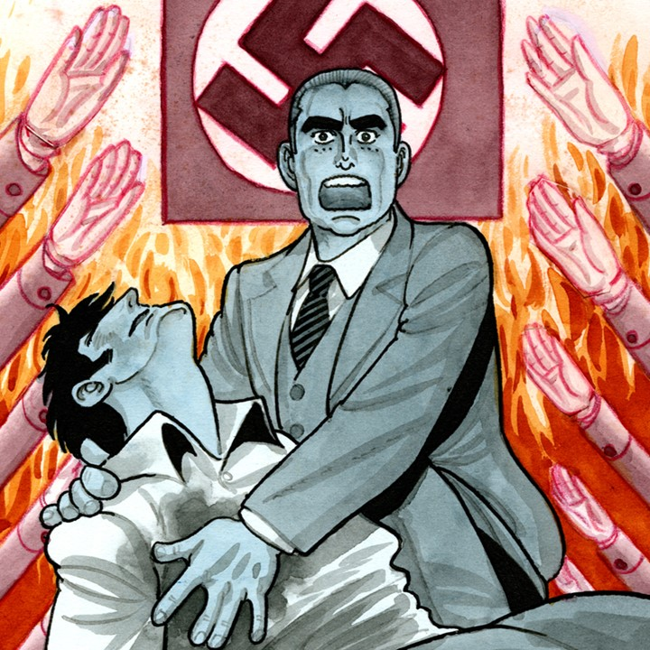
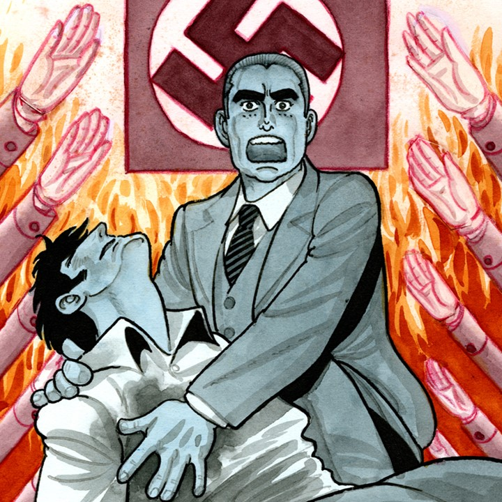

 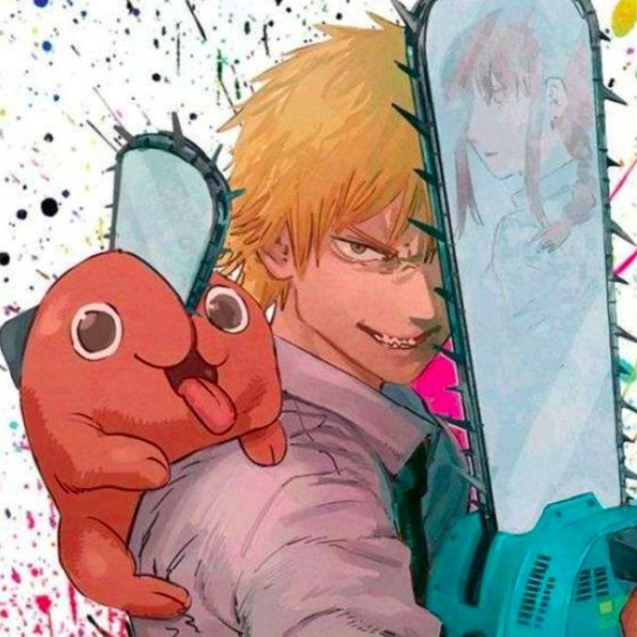
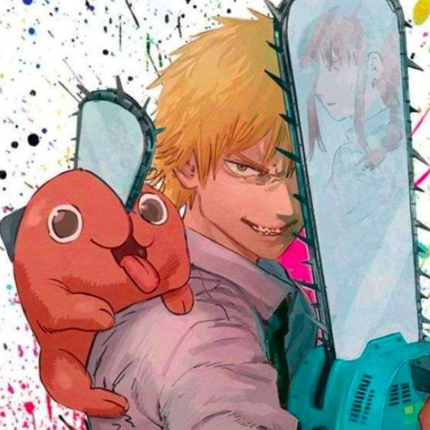
 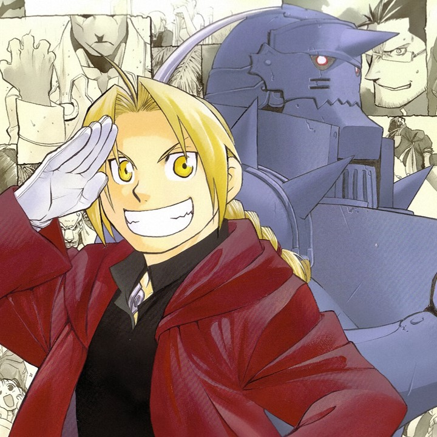
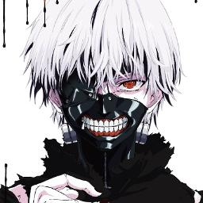
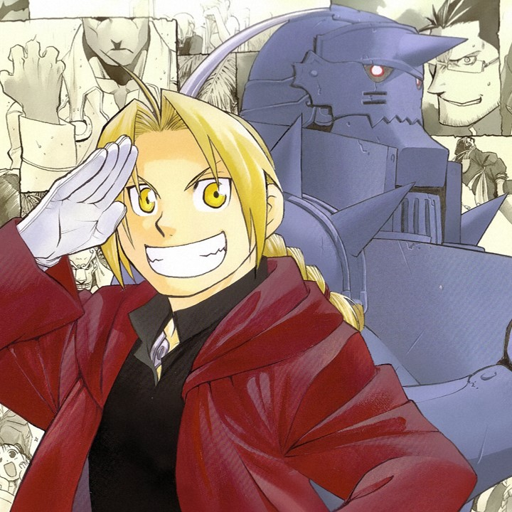
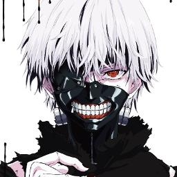

 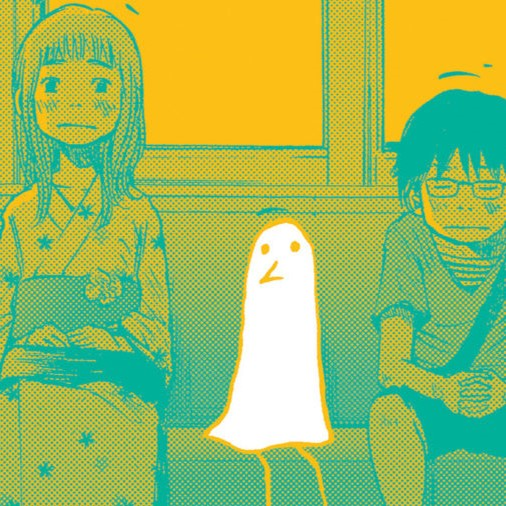
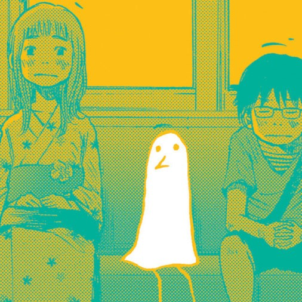
Newest Mangas
Here are ten of the most popular manga series currently running:
My Hero Academia - Kohei Horikoshi, this popular shonen manga series follows the story of
Izuku Midoriya, a young boy with no superpowers in a world where almost everyone has them. After a chance encounter
with his idol, the world's greatest hero All Might, he gains the power to become a hero himself and enrolls in a
prestigious academy for heroes in training.
Jujutsu Kaisen - Gege Akutami, this supernatural horror manga series follows the story of
Yuji Itadori, a high school student who becomes a jujutsu sorcerer after swallowing a cursed object to save his friends.
He joins a secret organization of jujutsu sorcerers who hunt down cursed spirits to protect humanity from their malevolent
influence.
Oshi No Ko - Aka Akasaka and Mengo Yokoyari, The story begins with a beautiful girl, her perfectly fake smile, and the people who love her
selfishly for it. What transpires behind the scenes of the glittering showbiz industry? How far would you go for the sake
of your beloved idol? What would you do if you found out reincarnation was real? The star of the show is Aquamarine Hoshino
and the stage is but a mere facade. Will he manage to reach the climax before the world of glamour swallows him whole?
Kaiju N° 8 - Naoya Matsumoto, this sci-fi action manga series follows the story of Kafka Hibino,
a sanitation worker who dreams of becoming a monster hunter. When he is accidentally exposed to a substance that turns him
into a kaiju (giant monster), he joins a special defense force to fight against the other kaiju threatening humanity.
Spy x Family - Tatsuya Endo, this action-comedy manga series follows the story of a spy named
Twilight who is tasked with infiltrating a prestigious school to get close to a target. He decides to adopt a telepathic
girl named Anya as his daughter and recruits an assassin named Yor to pose as his wife in order to create the perfect cover.
Blue Lock - Written by Muneyuki Kaneshiro and illustrated by Yusuke Nomura, this sports manga series follows the story of a
group of talented high school soccer players who are selected to participate in a special training program to create the
ultimate striker for the national team. The competition is fierce as they fight for the chance to be the top scorer and secure
a spot on the team.
Atelier Of Witch Hat - Kamome Shirahama, The series follows a girl named Coco, who dreams of being a witch, but in her world only
those born with magical abilities are able to become witches. However, after meeting a witch named Qifrey, it seems like there
may be hope for Coco after all.
Black Clover - Yuki Tabata, this shonen manga series follows the story of Asta, a young orphan who
dreams of becoming the Wizard King, the most powerful mage in the kingdom. Despite being born without any magic, he joins a magic
knight squad and with the help of his friends, he sets out to save the kingdom from various threats.
One Punch Man - Written by ONE and illustrated by Yusuke Murata, this action-comedy manga series follows the story of Saitama,
a young man who becomes a superhero for fun after training to the point where he can defeat any opponent with a single punch. He
faces various villains and monsters, often with the help of his sidekick Genos, and struggles to find a worthy opponent who can
give him a real challenge.
Images for the Page 3
 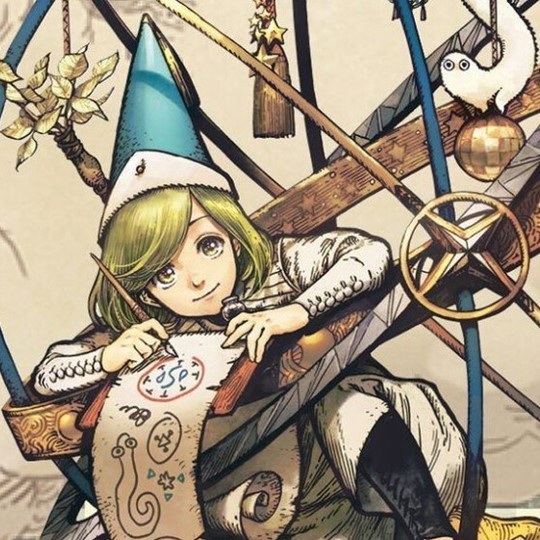
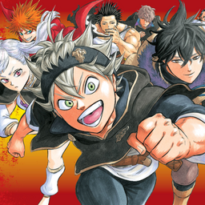
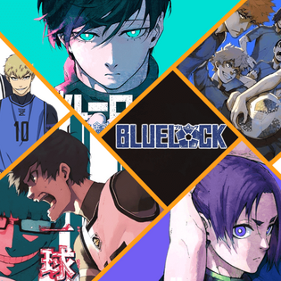
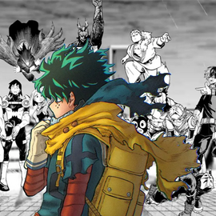
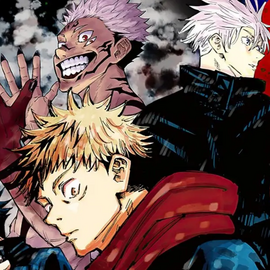
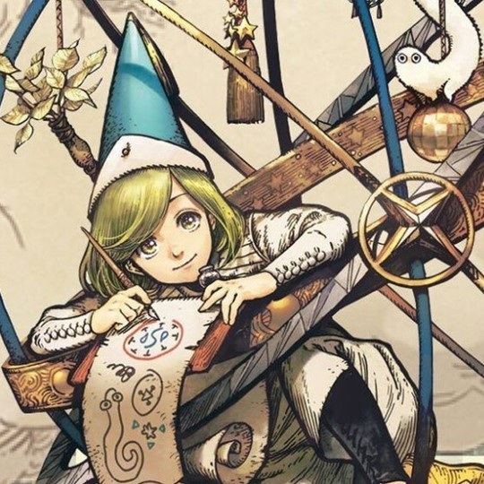
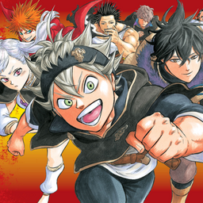
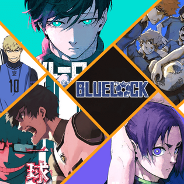
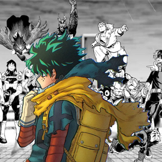
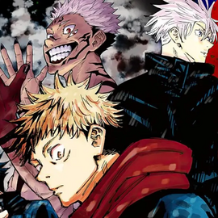

 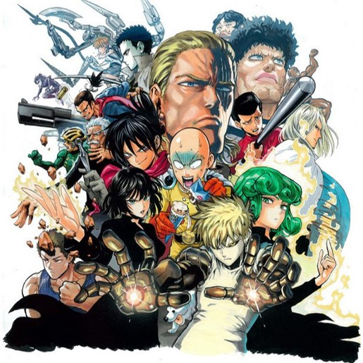
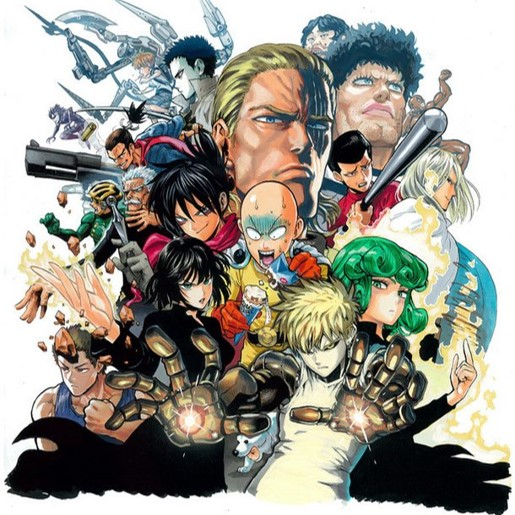


Wireframes
Create three wireframes for your site. One for each page and list them here
Home
The suscribe bottom is something I won't be able to make it work during this course, but I wanted to add it as a call to the action, if people like what I wrote in general about manga, they can get suscribe and receive emails every time I update data on the web-page.
Top Mangas
This is a simple page, where people will find an organized opt list of my favorite mangas, and a description about them, I'll add interactive responses to them so people would visually enjoy their time within my page.

Newest Mangas
Here I'll finally add the list of the newest mangas that are currently beeing pusblished, there is no a specific sort, so I decided to make smaller cards which will also be interactive, and at the bottom a small banner with information about where you can read those mangas online.